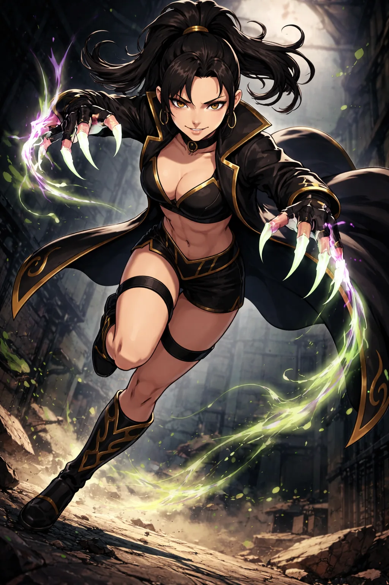

CHARACTER FILE

シャドウヴァイパー
Shadow Viper
『黒蛇の誘惑、毒牙の死角』
基本情報
- 年齢
- 24歳
- 体格
- 167cm・しなやかなアスリート型
必殺技
【ファング・シルエット】相手の視線を外した一瞬の隙に背後へ滑り込み、死角から指先で急所へ鋭い一撃を突き刺す奇襲技。気づいた時にはすでに間合いに入られている、黒蛇の牙のような必殺の一手。
超必殺技
【スニーク・スネーク（Sneak Snake）】フェアコアの力を毒のエネルギーへと変え、爪の先に集中させて放つ超必殺技。影に溶けるような動きで相手の死角へ回り込み、鋭い爪撃を何度も刻みつける。傷が増えるほど毒は深く回り、そのたびに体のしびれと苦しみも強まっていく。最後は背後から首筋へ爪を突き立て、たまった毒を一気に流し込んで動きを止める。
性格
妖艶でありながら冷酷。相手を翻弄する頭脳戦と暗殺者の本能を併せ持つ。
ファイトスタイル
スピード＆フェイント型。急所狙いのピンポイントアタックとステップワークを駆使する。
相性
- 有利な相手
- 鈍重なパワーファイター、単純な突進型ファイター
- 不利な相手
- 超反応型ファイター、完全防御型
プロフィール
闇に蠢く冷血の毒蛇──シャドウヴァイパー。 かつて暗黒組織「毒牙」に属し、“影の暗殺者”として数々の標的を葬ってきたが、組織内抗争の渦中に傷を負い、瀕死の状態で表舞台から姿を消した。 だが、その命運を拾い上げたのが、かつて神威から追放されし者──レジェンドオブサンダーである。 彼女に見出されたことで、シャドウヴァイパーはヴィランアライアンスに参戦。新たな“闇の舞台”であるリングへと舞い戻り、蛇のようなしなやかな動きと毒のように冷たい牙で、相手を翻弄し、無力化する戦闘スタイルを確立した。 感情を排したその姿はまさに“冷酷な沈黙”そのものであり、彼女がリングに立つ時、空気は一瞬にして張り詰めた闇へと変わる。
口癖
「シシシシシシシシシ（笑）」